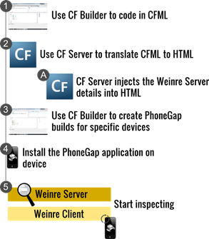
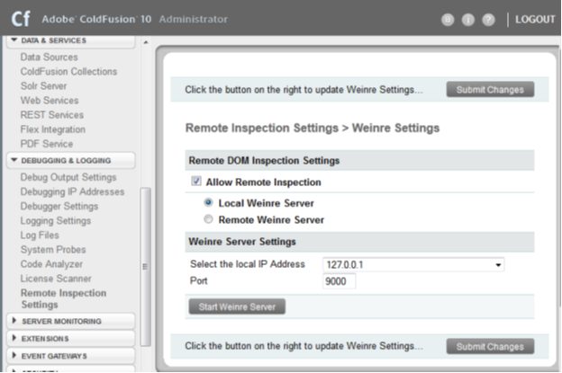
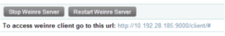
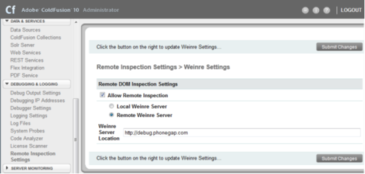
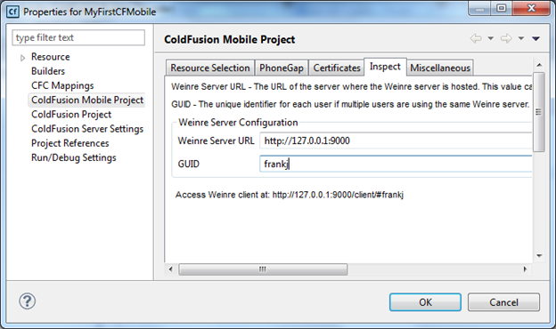
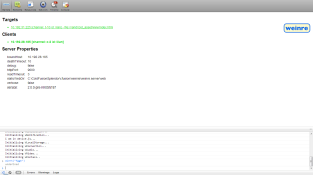
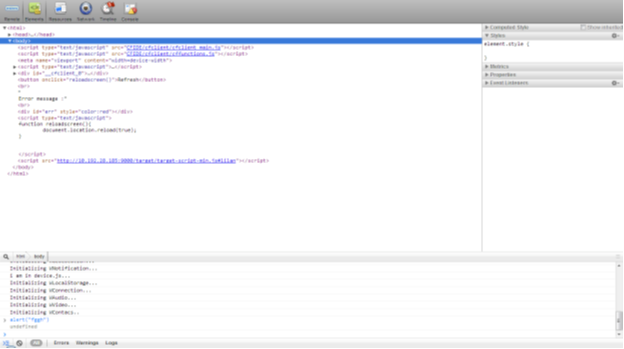

Weinre (Web Inspector Remote) is a remote inspector that can be used to debug your HTML-based mobile applications generated by ColdFusion. If you have already used PhoneGap for building applications and Weinre for debugging applications, you will find the Weinre support in ColdFusion very easy to use.
The following illustration depicts how you can inspect and control your mobile applications through the Weinre client:

Let us assume that you are packaging your ColdFusion-based mobile application into a platform-specific build targeting a particular device. You need to follow these broader steps to successfully inspect your application installed on the device:
- Use ColdFusion Builder to develop the application.
- Start the local Weinre Server from the ColdFusion Server Administration Console. See Step 1 – Start the local Weinre Server. You will get the Weinre client URL when the Weinre Server starts.
- Configure ColdFusion Builder with Weinre Server IP address and port details. See Step 3 – Configure ColdFusion Builder.
- When you create a PhoneGap application:
- The ColdFusion Server translates the CFML files to equivalent HTML and JavaScript files.
- The ColdFusion Server also injects code into the HTML files allowing the HTML files to be inspected remotely through the Weinre Client running on a browser.
- Copy and install the PhoneGap application on the device.
- Open the application on device.
- From a remote browser, access the Weinre client through the URL obtained from step 2.
- Start inspecting the application from the browser.
The following section describes these steps in detail.
Note: A Weinre inspection server is bundled with the ColdFusion Server. All that you need to do is start the local Weinre Server and start remotely inspecting your applications installed on devices.
Step 1 – Start the local Weinre Server
To start the local Weinre Server, perform the following tasks:
- In the ColdFusion Administration Console, click Debugging & Logging > Remote Inspection Settings
- On the right panel, click Allow Remote Inspection
- Click Local Weinre Server
- Leave the default values for the IP address and port
- Click Start Weinre Server

- When the Weinre Server gets successfully started, you can see a message containing the Weinre client URL:

Step 2 – (Optional, if not Step 1) Provide the remote Weinre Server location
To configure a remote Weinre Server, perform the following tasks:
- In the ColdFusion Administration Console, click Debugging & Logging > Remote Inspection Settings
- On the right panel, click Allow Remote Inspection
- Click Remote Weinre Server
- Enter the Weinre server URL
- Click Submit Changes

Step 3 – Configure ColdFusion Builder
When you have a local Weinre Server running, right-click the ColdFusion Mobile project, select Properties > ColdFusion Mobile Project and click the Inspect tab. Enter the Weinre Server URL. If a local Weinre Server is running provide the loopback address. You can provide a unique ID/GUID that will identify your debug sessions in the Weinre Server.

Step 4 – Packaging the mobile application
Step 5 – Inspecting the mobile application
You need to connect the mobile device to the same network as your Weinre Server. When the application is running on your device, open a remote browser and type the URL of the Weinre client that you have obtained in Step 1.

You will see the Weinre client interface. The Targets section lists the applications running on all connected devices available for inspection. When the hyperlink is green, the application is ready for inspection. Click the link to see the source code of the running application:

Start inspecting your application. For more information on the Weinre user interface, see this web page.
Inspecting web-based mobile application
For a web-based mobile application (not a packaged PhoneGap build), the steps mentioned above are applicable except for a few minor changes. The mobile will request for a web page with a query parameter of INSPECT in the URL. You can manually provide the URL parameters as follows:
- http://<ip address>:<port>/<file path>?INSPECT
- http:// <ip address>:<port>/<file path>?INSPECT&GUID=weinre
- http:// <ip address>:<port>/<file path>?INSPECT=false